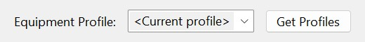
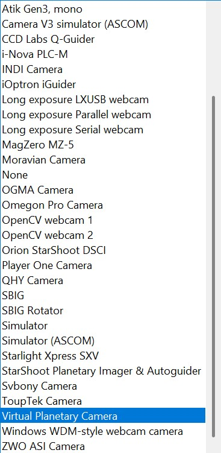
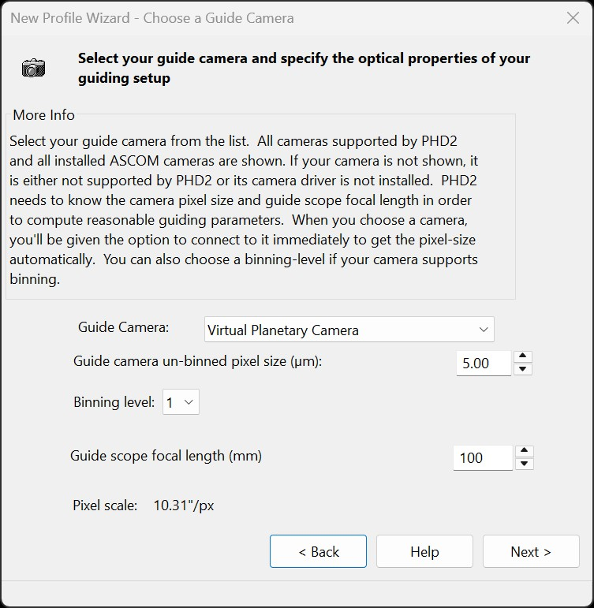
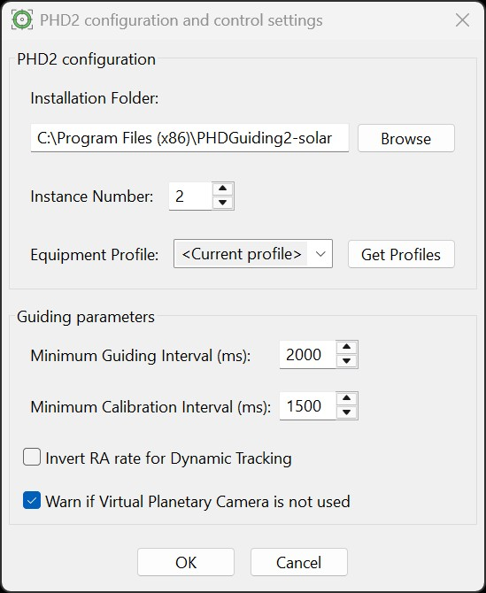

The PHD2 Configuration ensures HelioMaker integrates correctly with the custom version of PHD2 for guiding functionality. It is recommended that users have prior experience with PHD2, but this section provides key concepts and guidelines specific to HelioMaker's operation.
Make sure to enable server in PHD2 by checking the Enable Server checkbox in the PHD2 Tools menu. This is essential for HelioMaker to communicate with PHD2.

Note: While HelioMaker is connected to PHD2, the fields for selecting the PHD2 executable path, instance number, and equipment profile are disabled to prevent changes during an active connection. To modify these settings, exit the PHD2 Configuration dialog, disconnect from PHD2 using the Link button, and then reopen the PHD2 Configuration dialog.
C:\Program Files (x86)\PHDGuiding2-solar.
The Instance Number specifies which PHD2 instance HelioMaker should connect to for solar and planetary guiding.
When HelioMaker launches PHD2, it passes this number as a command-line option (-i).
This allows you to run multiple PHD2 instances or maintain separate configurations.
By default, the custom PHD2 version uses 2, while the official PHD2 version uses 1.
If you wish to keep two separate installations of PHD2, one from the official PHD2 website for regular astrophotography and another custom version for solar, lunar, and planetary imaging with HelioMaker, it is advisable to install the latter PHD2 version in a separate program folder. Use a different instance number to allow maintaining separate equipment profiles for these two PHD2 installations. For more detailed information about PHD2 instance numbers and their usage, please refer to the FAQ section: How to Configure the PHD2 Instance Number?.
This is the equipment profile that will be automatically loaded by PHD2 when HelioMaker connects with PHD2 via the Link button. To ensure HelioMaker uses the correct PHD2 equipment profile:

HelioMaker with an activated license enables the selection of the Virtual Planetary Camera, available only in the custom version of PHD2. This is not a physical device but rather a virtual PHD2 device that receives image frames directly as captured by a physical camera attached to SharpCap Pro. Supporting this PHD2 camera is a key feature of HelioMaker, allowing a single camera to be used for both image capture and guiding.
Sharing a single camera by selecting Virtual Planetary Camera in the PHD2 equipment profile enables both imaging and guiding. This is particularly useful at long focal lengths when using HelioMaker's Surface Features mode, as well as for full solar or lunar disk imaging. HelioMaker performs non-stellar detection and supplies the detected target position to PHD2.
To select the Virtual Planetary Camera, open the camera selection dropdown list in the PHD2 equipment editor or Profile Wizard (accessible within the PHD2 program, not HelioMaker), as shown below. Note that the Virtual Planetary Camera is available only in the custom PHD2 version described in this documentation.

If PHD2 is currently connected to HelioMaker, the choice of selecting the Equipment Profile will be greyed out. To select a different equipment profile, the user will need to disconnect HelioMaker from PHD2 first. This process will be described in the operational section of the manual.
When selecting the Virtual Planetary Camera in PHD2 using its New Profile Wizard, the user will be asked if the camera is already connected to the PC. It is recommended to answer No and then:

When using a camera shared between SharpCap and PHD2 (Virtual Planetary Camera):

Alternatively, it is possible to use a separate guiding camera and its dedicated guidescope with HelioMaker by selecting a camera other than Virtual Planetary Camera in the PHD2 equipment profile. In this case, the "Confirm use of Virtual Planetary Camera" checkbox should be left disabled.
When using a separate guiding camera with PHD2:
If PHD2 already has a valid full-disk or crescent detection when HelioMaker connects, HelioMaker can adopt the current object size and sensitivity to avoid restarting setup from defaults. For operational details, see Find & Track with a Physical PHD2 Camera.
HelioMaker enforces reasonable guiding intervals to maintain optimal guiding performance. This is managed through a set of parameters introduced by HelioMaker:
HelioMaker automatically adjusts the PHD2 time lapse value to comply with these parameters. To ensure effective guiding, it is recommended to set intervals that allow guiding pulses approximately every 0.5-5 seconds, aligning with PHD2 operational principles.
Additional guiding and calibration parameters, such as settling distance and timeouts, can be reviewed and edited in HelioMaker Advanced Settings. For manual control, these parameters can also be adjusted directly using the PHD2 user interface.
Since PHD2 calibration is an advanced topic, and manually selecting its parameters requires in-depth knowledge and experience, beginners are encouraged to use HelioMaker's recommended workflow for PHD2 calibration. This workflow automates the process and ensures that PHD2 calibration parameters are configured optimally without requiring extensive user intervention. Although PHD2 recommends calibrating near the celestial equator, this is not a blocker for daytime solar or planetary work. The Sun, Moon, and planets stay within about +/-30 degrees declination everywhere on Earth, which provides a strong enough RA signal for reliable calibration. Since stars are unavailable in daylight, the proper approach is to calibrate directly on the visible target (Sun, Moon, or a planet). If PHD2 still warns that calibration is "far from the equator," it usually indicates a configuration issue (incorrect mount coordinates, time or site, profile or driver settings) rather than a limitation of the target.
The Invert RA rate for Dynamic Tracking checkbox controls the sign of the RA tracking rate used by HelioMaker's Dynamic Target Tracking feature.
Some mounts interpret ASCOM RA-rate polarity differently. If enabling Dynamic Target Tracking causes the target to drift excessively instead of improving stability, try toggling Invert RA rate for Dynamic Tracking and then click Start Dynamic Tracking again.
This setting is relevant only to Dynamic Target Tracking. It does not affect standard sidereal, solar, lunar, or king tracking rates selected directly in the mount.
This checkbox enables a warning if HelioMaker expects to find the Virtual Planetary Camera in the PHD2 profile but does not detect it. This is useful for users who may have multiple PHD2 profiles and want to ensure they are using the correct one.
For a tutorial on setting parameters in the PHD2 Solar & Planetary Guiding Tool, refer to the Using PHD2 Solar & Planetary Guiding Tool.
For details about the custom PHD2 version used in HelioMaker, visit the Wiki section on GitHub: github.com/Eyeke2/phd2.planetary/wiki.
For PHD2 documentation, visit the official PHD2 website: openphdguiding.org.
The PHD2 user forum is another excellent resource for asking questions and receiving help from the community: Open PHD Guiding on Google Groups.